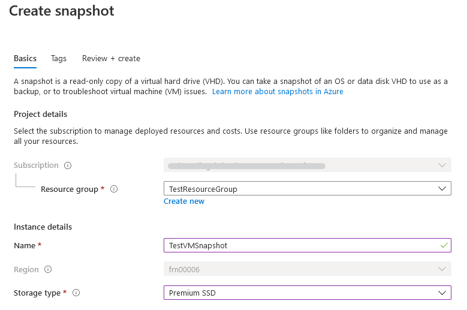
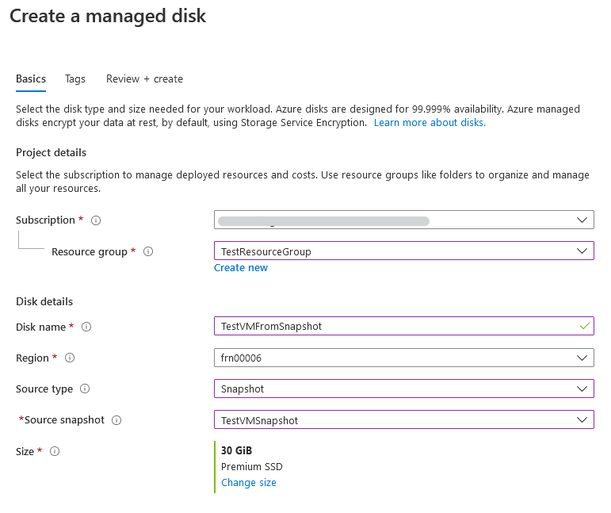
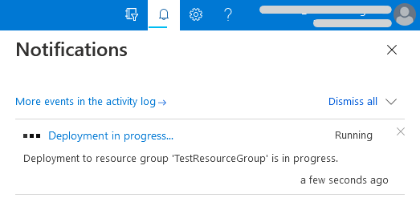
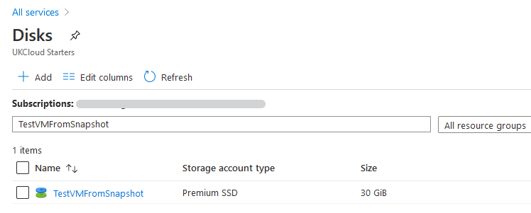
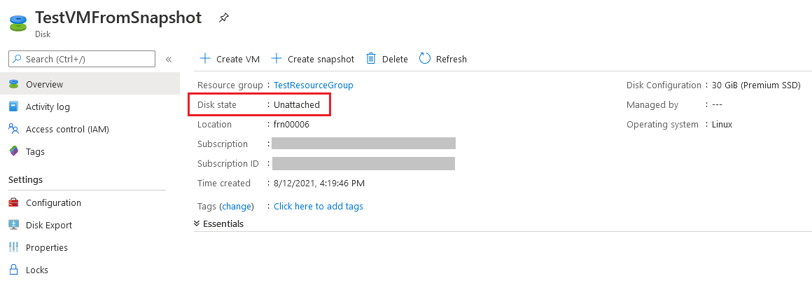
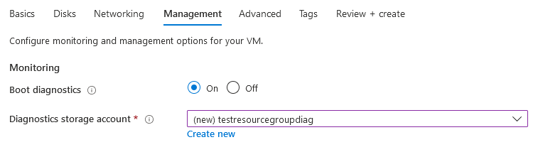

How to create a virtual machine from a disk snapshot using the UKCloud Azure Stack Hub portal
Overview
A snapshot is a copy of a virtual disk at a specific point in time. Snapshots are often used as backups, as they enable you to quickly and easily restore a disk to its original state if something goes wrong. You can also export snapshots to a VHD file, which you can then use to externally troubleshoot potential issues with a virtual machine.
This article shows you how to use the UKCloud Azure Stack Hub portal to:
Take a snapshot of a managed disk
Create a new managed disk from the snapshot
Create a virtual machine from the new managed disk
Intended audience
To complete the steps in this article, you must have appropriate access to a subscription in the Azure Stack Hub portal.
Creating a snapshot from a disk
Log in to the Azure Stack Hub portal.
For more detailed instructions, see the Getting Started Guide for UKCloud for Microsoft Azure.
In the favourites panel, select All services, then, in the Compute section, select Disks.

From the list, click the name of the disk that you want to create a snapshot from.

Note
You can only create snapshots from managed disks.
In the new blade for the selected disk, click Create snapshot.

In the Create snapshot blade, enter the following information:
Subscription - This will be your UKCloud for Microsoft Azure subscription.
Resource group - Select an existing resource group, or create a new one by clicking the Create new link and then typing a name for your new resource group in the pop out window.
Name - The name of the snapshot.
Region - This will be the location of the Azure Stack Hub.
Storage type - Choose either Standard (HDD) or Premium (SSD) storage.

When you're done, click the Review + create button and then the Create button to create the snapshot.
You can monitor the progress of the snapshot creation by clicking the Notifications icon.

Creating a new managed disk from a snapshot
In the favourites panel, select All services, then, in the Compute section, select Disks.
On the Disks blade, click Add.

In the Create a managed disk blade, enter the following information:
Subscription - This will be your UKCloud for Microsoft Azure subscription.
Resource group - Select an existing resource group, or create a new one by clicking the Create new link and then typing a name for your new resource group in the pop out window.
Disk name - The name of the disk.
Region - This will be the location of the Azure Stack Hub.
Source type - Select Snapshot.
- Source snapshot - Select the previously created snapshot.
Size - This will be set to the size of the source disk that the snapshot was created from.
Note
You can increase the size if necessary, but you cannot decrease it below the original size.

When you're done, click the Review + create button and then the Create button to create the disk.
You can monitor the progress of the disk creation by clicking the Notifications icon.

Creating a virtual machine from a managed disk
In the favourites panel, select All services, then, in the Compute section, select Disks.
From the list, click the name of the disk that you want to create a virtual machine from. If you have been following this guide from the start, then this will be the disk that you just created from the snapshot.

In the new blade for the selected disk, under Overview, ensure that Disk state is listed as Unattached.
Important
If your disk is not in the Unattached state, you will have to delete the virtual machine object it is attached to.
You can only detach data disks, not OS disks, from a virtual machine.

At the top of the blade, click Create VM.
In the Create a virtual machine blade, in the Basics step, enter general information about the VM, including a name, credentials and resource group.

Click Change size under the currently selected VM size to view all the available sizes. Select the appropriate size for your VM, depending on its purpose, then click Select.
For information about the different available VM sizes, see here.

Change any of the optional settings located in the other tabs, then click Review + create.
Important
There will be no public inbound ports open on the network security group if left unchanged.

Note
By default, boot diagnostics will be switched on for the virtual machine.

In the Review + create step, review the selections you've made and then click Create to start the deployment.

You can monitor the progress of your VM's deployment by clicking the Notifications icon.

Feedback
If you find a problem with this article, click Improve this Doc to make the change yourself or raise an issue in GitHub. If you have an idea for how we could improve any of our services, send an email to feedback@ukcloud.com.